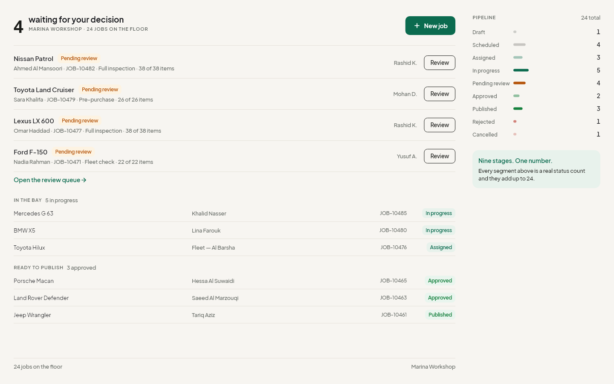
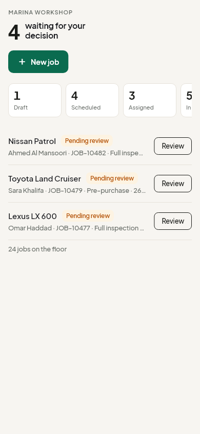
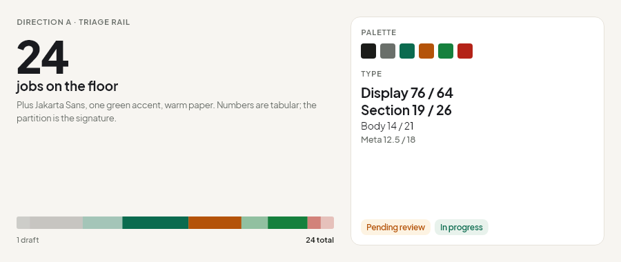
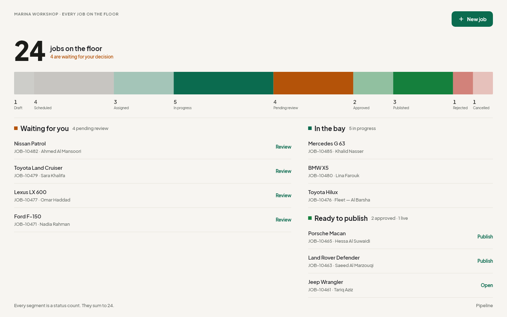
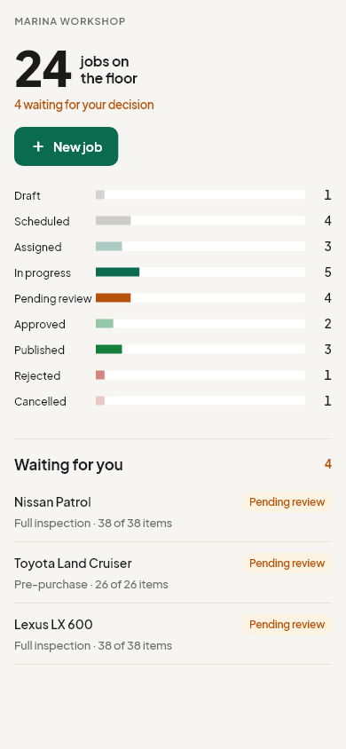
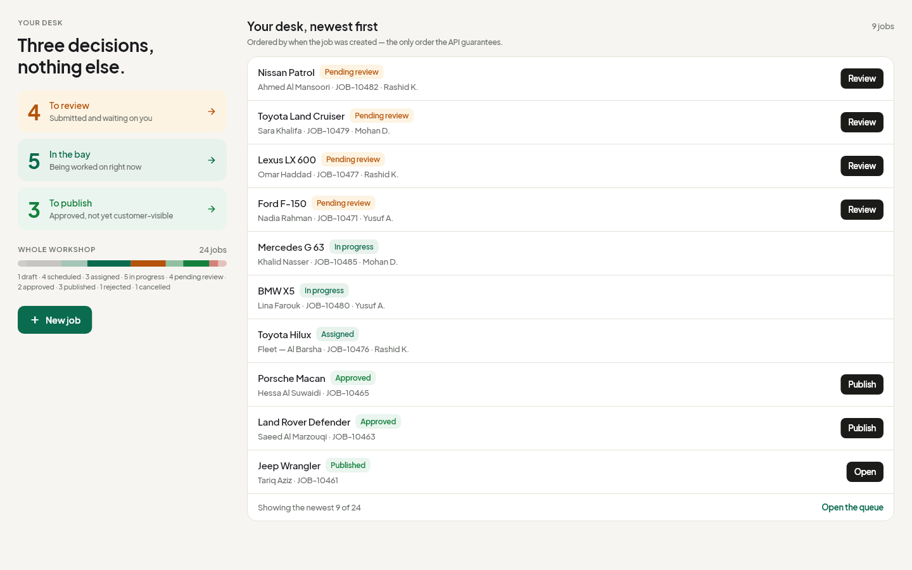
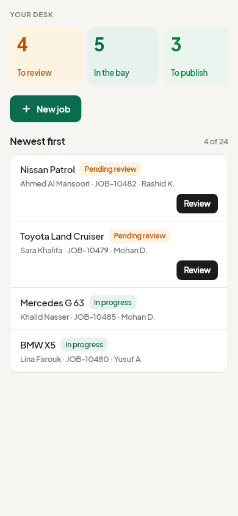

Real-font renders from the throwaway preview harness, at 1440 and 390, plus a style tile each. Numbers come from the verified nine-bucket partition (1+4+3+5+4+2+3+1+1 = 24). Nothing here is production code yet.
The page is one ranked work list; the pipeline is a fixed instrument panel beside it.



Trade-off: only the top stage is expanded, so the other eight are a legend. Publishing is buried one section lower.
The nine-segment partition is the page: every element hangs from one full-bleed bar.


Trade-off: strongest truth and identity, least actionable per pixel — no inline controls, and the giant number does nothing.
Three decisions, one feed. The only numbers are the three the admin can act on.


Trade-off: three windows onto nine states, so the page shows less of the workshop; "nothing else" has to absorb approved/rejected/cancelled in the legend.